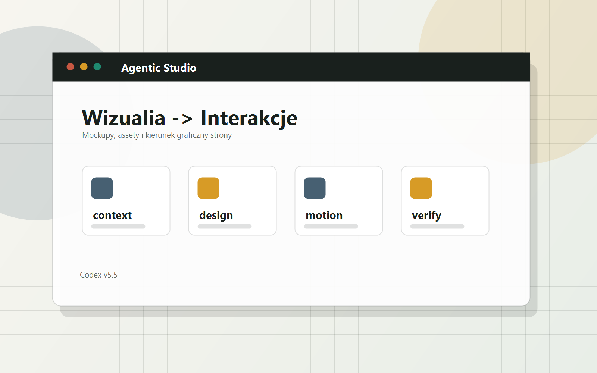

Katalog `assets/`
Tu możemy dodać obrazy, mockupy, tekstury, nagrania albo wygenerowane bitmapy do hero.
Ta runda dodaje wizualny język pracy agenta: okno robocze, boczne sygnały, ślady zmian i miejsce na prawdziwe bitmapy.

Tu możemy dodać obrazy, mockupy, tekstury, nagrania albo wygenerowane bitmapy do hero.
Wizualia mają pokazywać stan, produkt i pracę, a nie być przypadkową dekoracją.